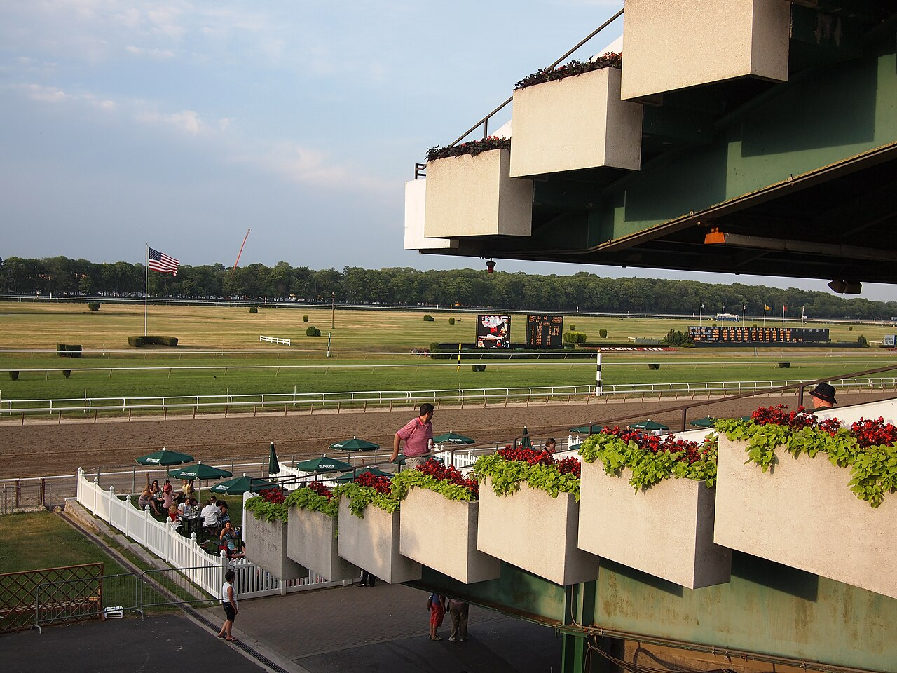

Muere a los 99 años Pierre «Peb» Bellocq, el caricaturista del turf que pintó el mural de Belmont Park
Pierre Bellocq, el dibujante francés que firmaba como «Peb» y que durante más de medio siglo retrató el mundo de las carreras en el Daily Racing Form y en los murales de Belmont Park, murió el 12 de noviembre en el centro médico de Princeton (Nueva Jersey), trece días antes de cumplir 100 años.

Había nacido el 25 de noviembre de 1926 en Bedenac (Francia), en una familia de carreras: su padre, Hilaire, era jockey de obstáculos, su abuelo entrenador y su bisabuelo criador, y su hermano Louis llegó a ser uno de los jockeys destacados de su época. Empezó a dibujar profesionalmente en 1945 y, ya conocido en Francia, el propietario del hipódromo de Laurel, John D. Schapiro, le encargó los carteles y programas de la primera Washington D.C. International, en los años cincuenta.
En 1955 entró en el Morning Telegraph, publicación hermana del Daily Racing Form, y su primera viñeta coincidió con la inauguración del hipódromo de Jamaica, en Nueva York. Publicó en el Form durante 53 años, hasta 2008, y después colaboró con el Thoroughbred Daily News. Su sello era dar a los caballos rasgos y pensamientos casi humanos: tras la trágica carrera entre Ruffian y Foolish Pleasure dibujó a Foolish Pleasure, entristecido, con un pin de Ruffian; en 2004 convirtió a Smarty Jones en Rocky Balboa para la portada del Belmont Stakes.
También pintó grandes murales para Belmont Park, Churchill Downs y Del Mar, y reunió su obra en cinco libros, entre ellos «Peb's Equine Comedy» y «Peb: The Art of Humor». Fundó y presidió el Amateur Riders' Club of America, que organiza carreras para jinetes aficionados.
Recibió un Eclipse especial por su contribución a las carreras en 1980, el título de Caballero de las Artes y las Letras de Francia en 1983, la Jockey Club Medal en 2016 y, en 2020, la entrada en el Salón de la Fama del National Museum of Racing dentro del Joe Hirsch Media Roll of Honor.
Su hijo Remi, que sigue sus pasos como dibujante, lo despidió así: «Siempre habrá un solo Peb. Se le puede copiar, pero no reemplazar».
Por Martín Larrañeta